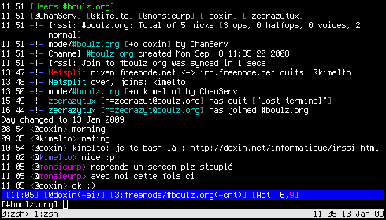

irssi
Qu'est-ce ? irssi est un client IRC en mode console, donc léger, donc super par ssh et tout. Pas grand chose à dire la dessus.
Un petit screenshot pour voir de quoi ca a l'air :

La barre blanche en bas, c'est tmux, car mon irssi est sur mon serveur. (Et on voit que je me lève plus tôt que cette grosse feignasse de kimelto.)
plugins
irssi a le bon gout de pouvoir être agrémenté de plugins tous plus cools les uns que les autres. Mais comme ca sert à rien d'en mettre partout jusqu'à saigner des yeux, on va en mettre le moins possible.
Voici ceux que j'utilise :
* nickcolor affiche une couleur différente par nick. Ca permet une lecture très aisée des conversations à plus de deux personnes.
Voilà, c'est tout, le reste me satisfait parfaitement. Mais vous pouvez toujours aller faire un tour ici pour en grapiller d'autres.
charger/décharger les plugins
Attention, section biberon.
On place ses scripts dans ~/.irssi/scripts, on tape /script load nomduscript pour le charger ou /script unload nomduscript pour le décharger. Dur non ?
Petite subtilité, si on veut que notre script soit chargé automatiquement au démarrage d'irssi, on créé un répertoire autorun dans ~/.irssi/scripts et on y ln -s notrescript.pl.
configuration
Rien de bien sorcier ici, simplement, comme on a le plugin nickcolor, les hilights ne resortent pas bien. On peut remédier à cà en hilightant la ligne complète et pas seulement le nick du hilighter :
/hilight -line doxin
On peut accesoirement changer la couleur, et tout, car c'est pas très très beau dans l'état, mais bon :
/help hilight
comme on dit chez moi.